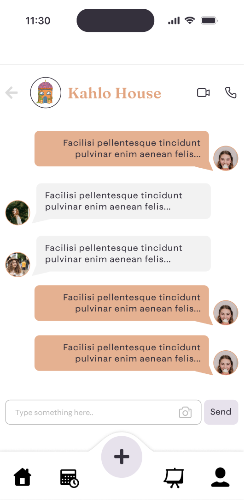
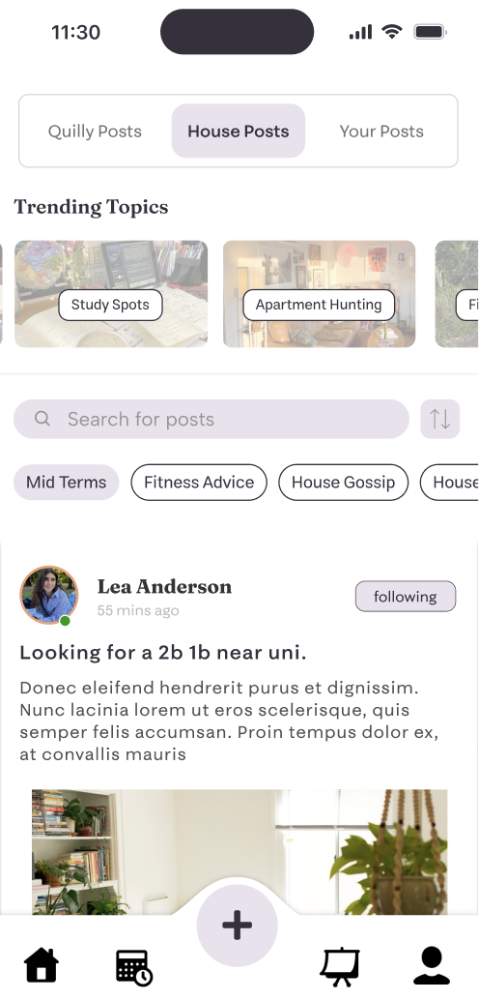
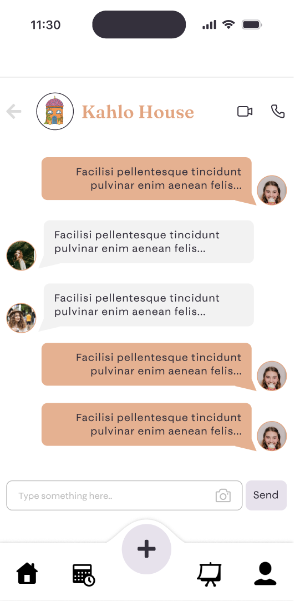
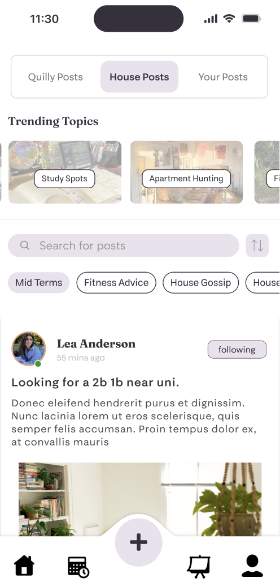
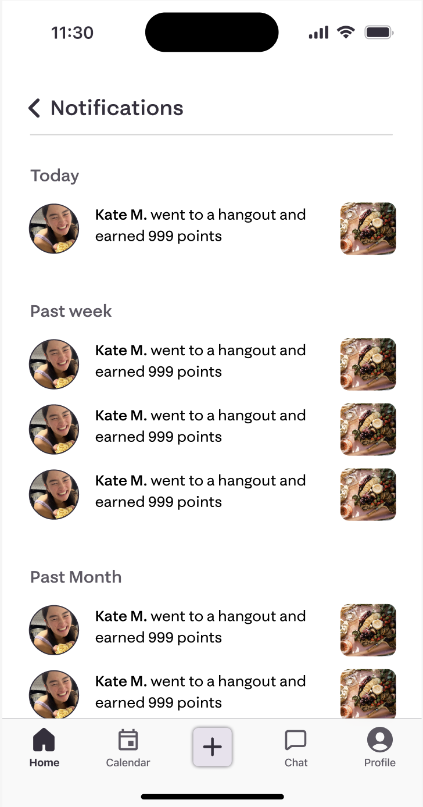
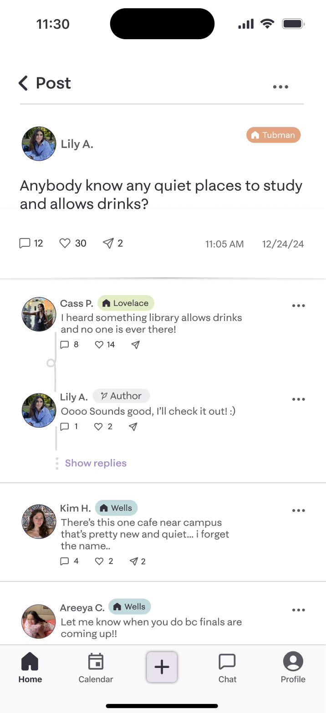
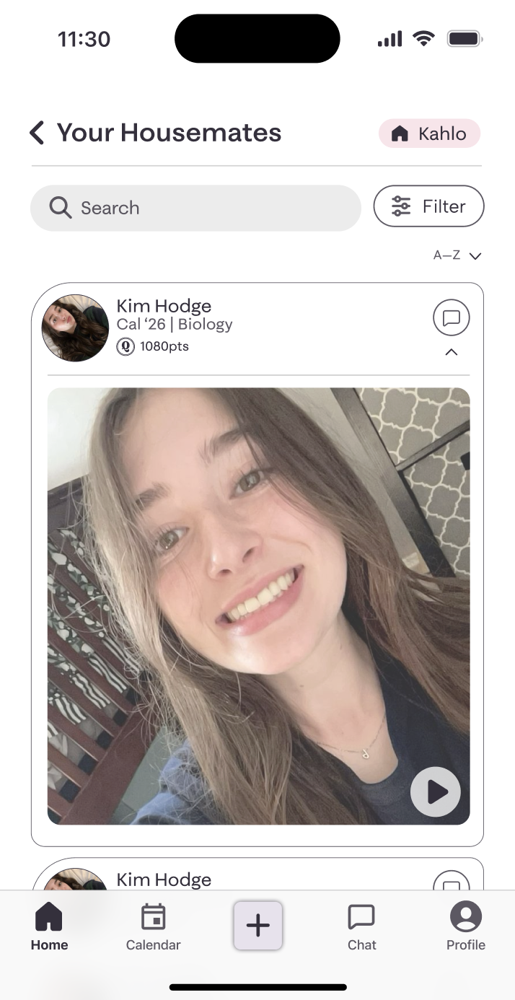
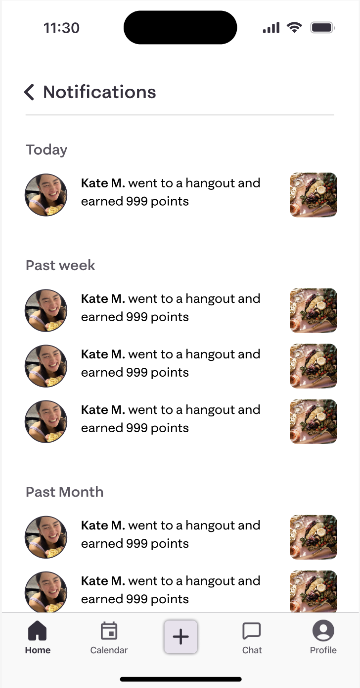
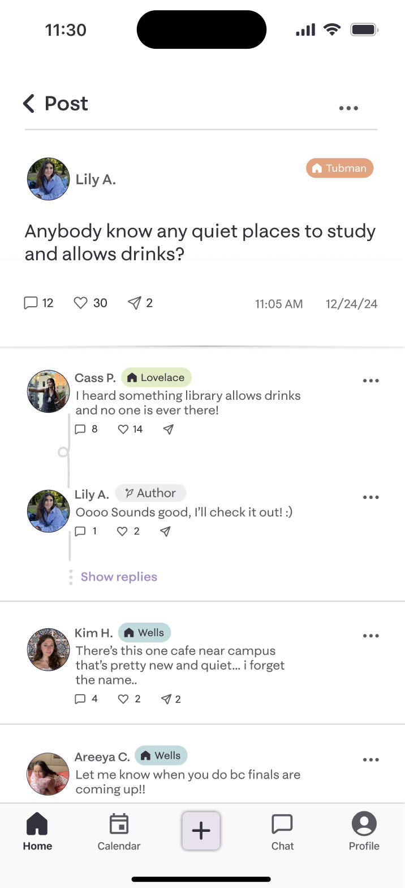
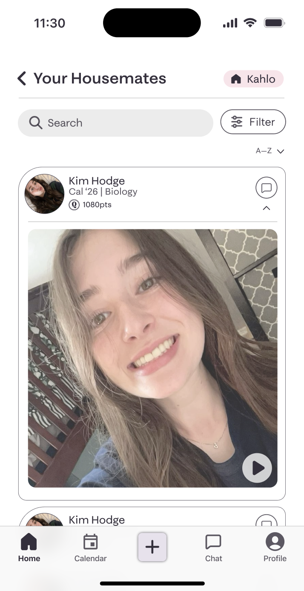

project overview

College is marketed as the "best years of your life," yet for many
women, it’s isolating.
Quilly isn't just an app; it's a digital sisterhood.
The Problem: College women lack a safe, authentic
digital space to find community, often feeling lonely despite
being constantly connected.
The Goal: Design a femme-centered "pocket guide"
that prioritizes real-world connection, safety, and genuine
support over vanity metrics.
The Impact: A successfully launched
beta
at UC Berkeley that helps students find their "forever friends"
and navigate college with less stress.


 



 




